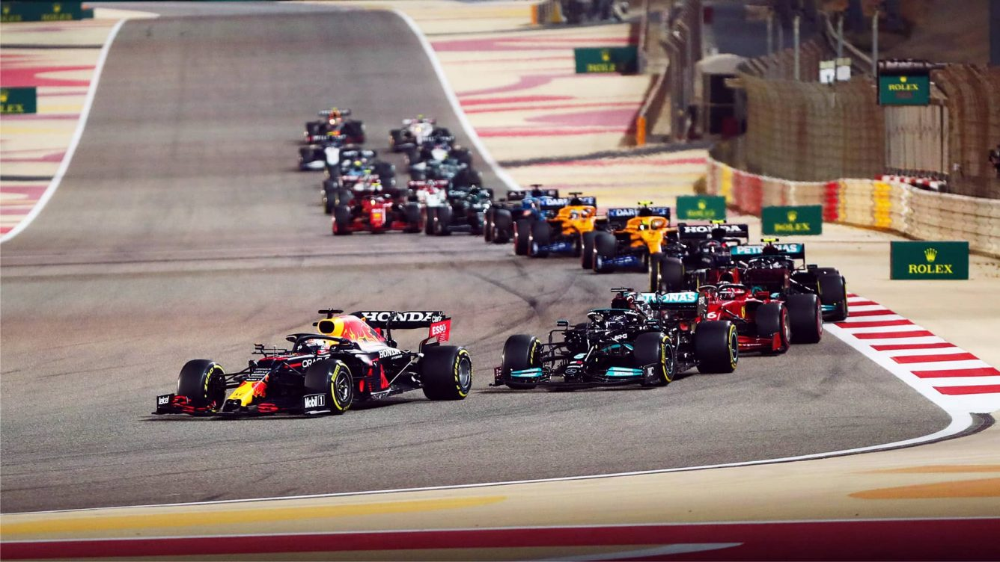

A Red Bull Racing também é impressionante no pitlane. Durante o Grande Prêmio da China, a equipe austríaca fez duas paradas duplas nos boxes. Ao fazer isso, a Red Bull conseguiu um feito notável.
Last updated 3 mins ago

As duas primeiras corridas da temporada de Fórmula 1 de 2024, no Bahrein e na Arábia Saudita, serão realizadas nas noites de sábado. Essa mudança tem o propósito de evitar conflitos com o Ramadã, período sagrado para os muçulmanos, que começará em 10 de março.
Last updated 3 mins ago

Após uma temporada difícil em 2023 na Fórmula 1, mesmo com o vice-campeonato, a Mercedes vai começar 2024 do zero, anunciando que vai mudar quase todos os componentes do carro do próximo ano em busca de um retorno às vitórias.
Last updated 3 mins ago